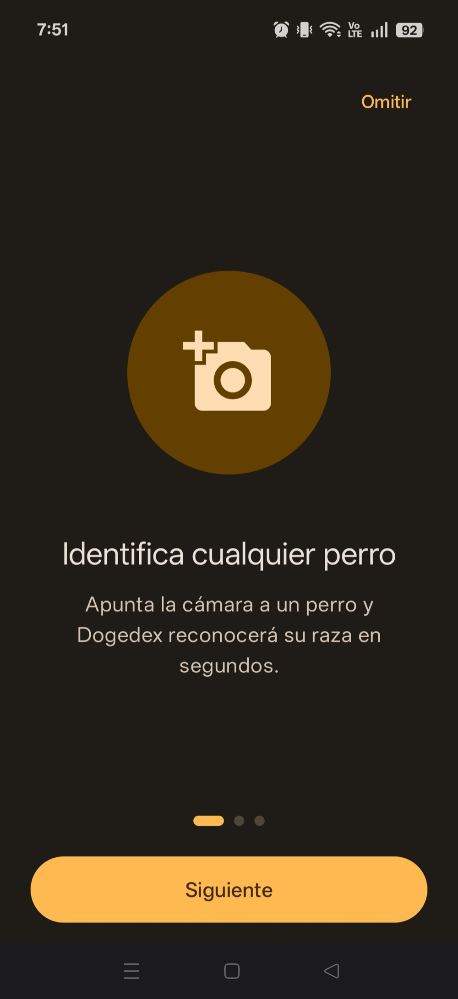
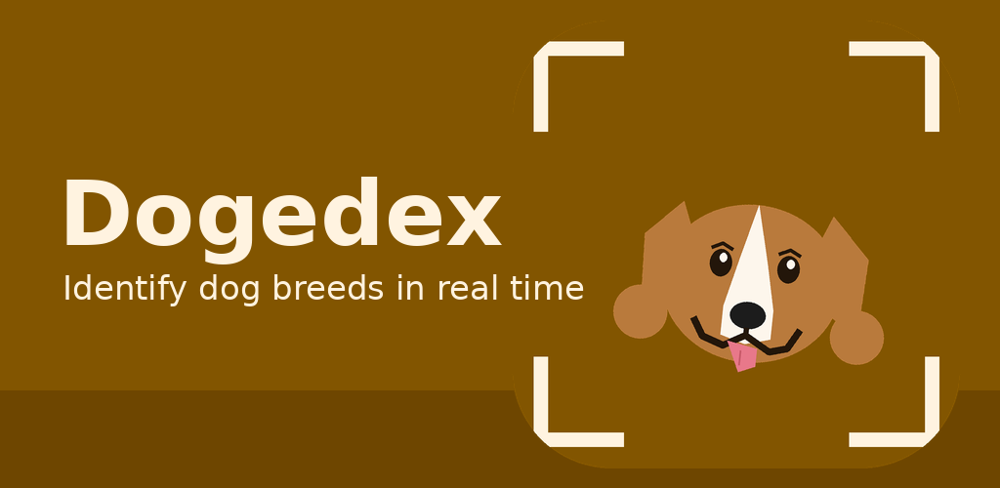
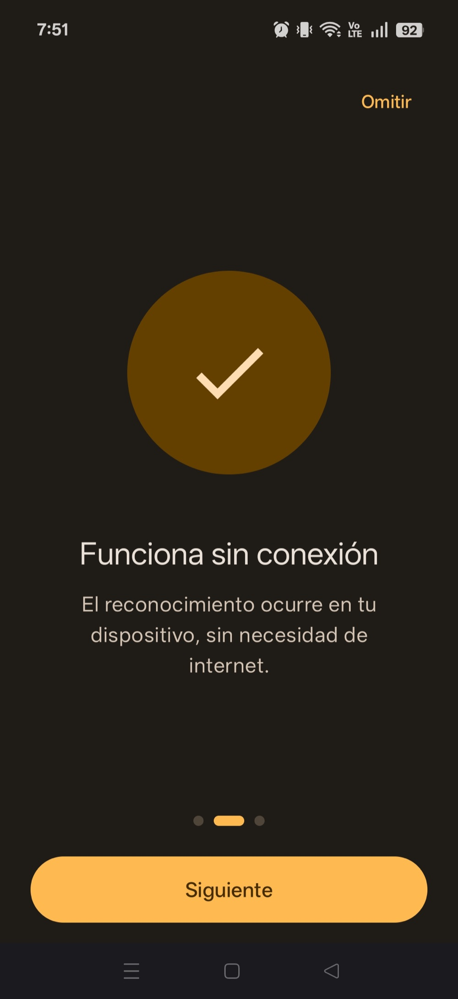
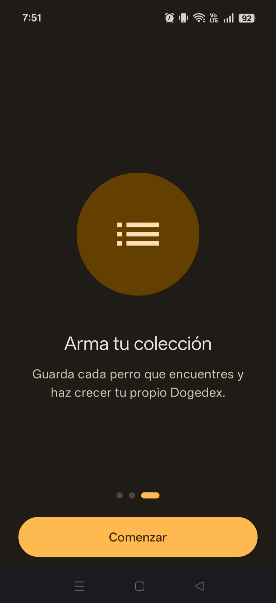
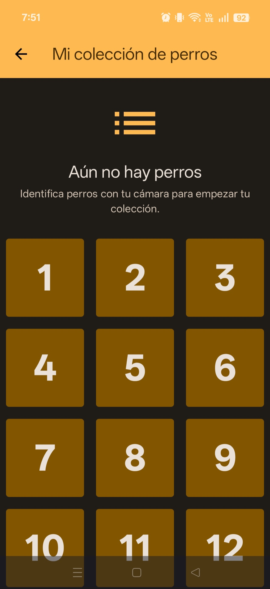
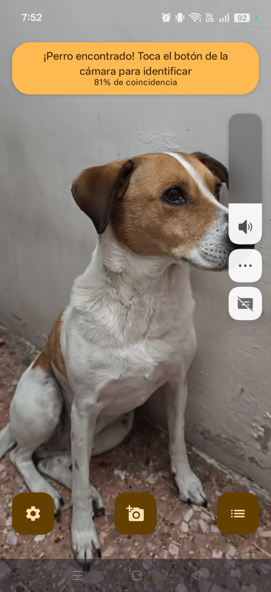
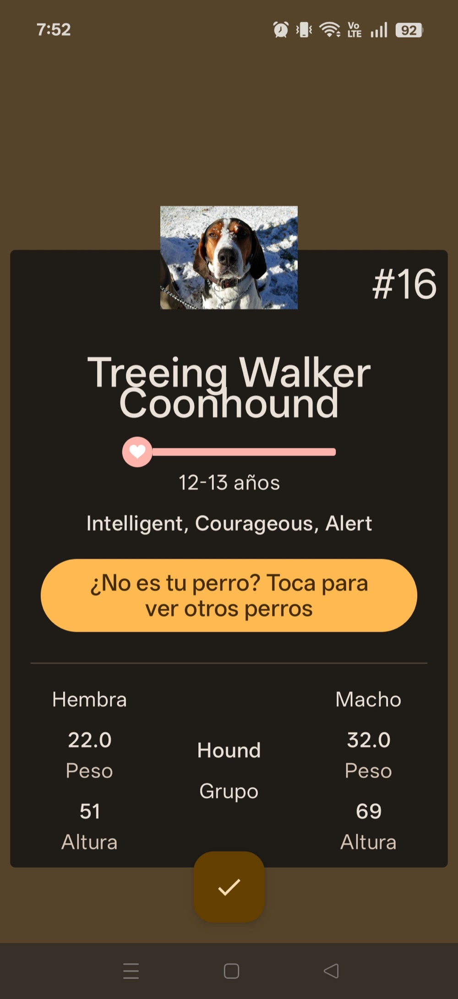
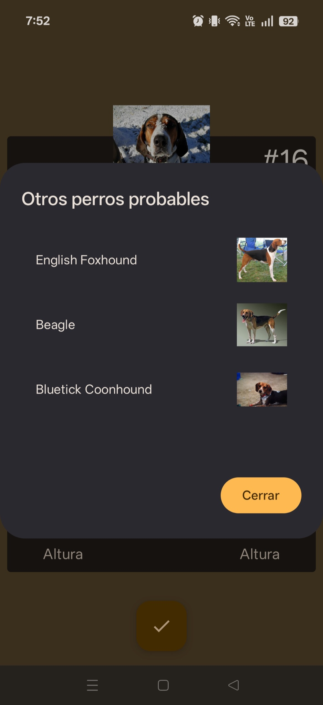
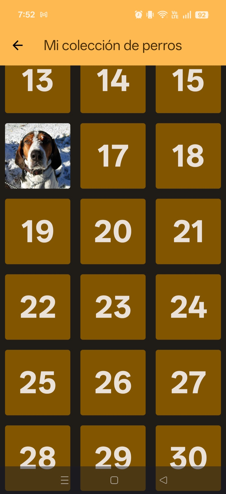
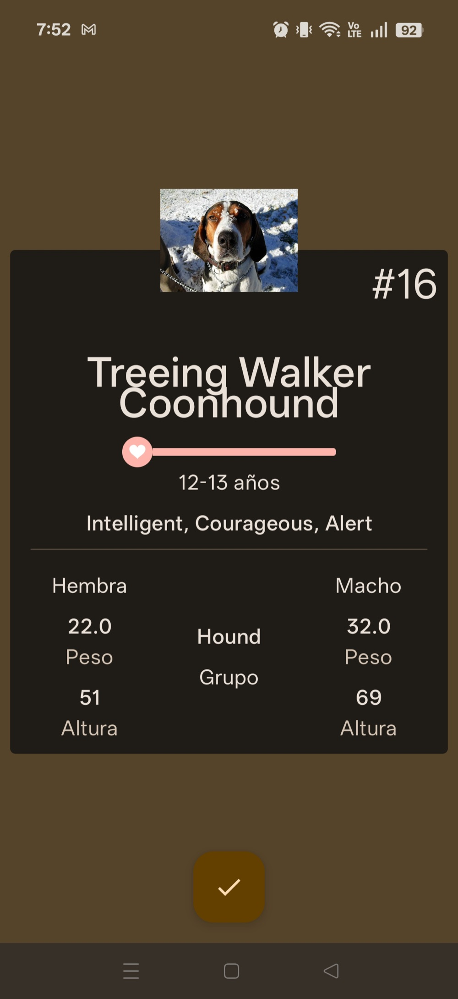

01
Identify any dog
Onboarding starts with the core idea: point the camera at a dog and Dogedex recognizes its breed in seconds.
Point your camera at a dog and find out its breed in real time. A TensorFlow Lite model runs entirely on your phone — no accounts, no cloud calls, no internet needed — and every dog you recognize is added to your own collection.


Onboarding starts with the core idea: point the camera at a dog and Dogedex recognizes its breed in seconds.

Recognition happens on your device with a TensorFlow Lite model, so it needs no internet connection and sends nothing to the cloud.

Save every dog you meet and grow your own Dogedex. Skip the walkthrough at any time; it only shows once.

Every breed has a numbered slot. Until you find a dog, the grid waits with a friendly hint to start scanning.

The camera view tells you when a dog is in frame and how confident the model is, here an 81% match. Tap the camera button to identify it.

The recognized breed opens as a card with its number, life expectancy, temperament, group, and weight and height for females and males.

When the model is unsure, tap to see the other most probable breeds with their photos and pick the right one.

The identified breed fills its slot in the grid with its photo, while the rest stay numbered until you find them.

Open a collected dog at any time to read its details again, all stored on your phone and available offline.
:app holds screens and navigation, :camera holds the classifier and camera code with no UI, and :core holds the database, models, theme and shared composables. Dependencies only point toward :core.UiState held in a StateFlow. User intents are UiActions, and one-shot events like navigation go through a UiEffect channel, never through state.DogTasks, ClassifierTasks) so tests inject fakes. Errors travel as a sealed ResponseStatus and messages are resolved through a DI abstraction, keeping ViewModels free of Android context.